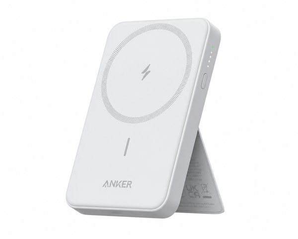
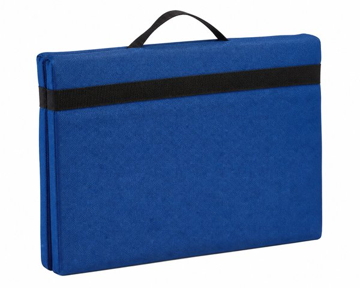
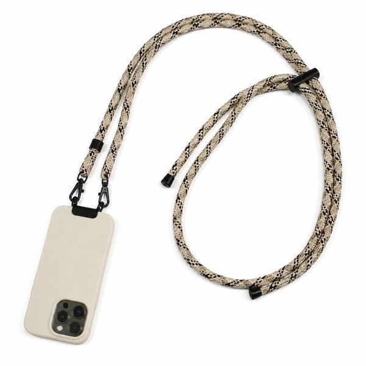
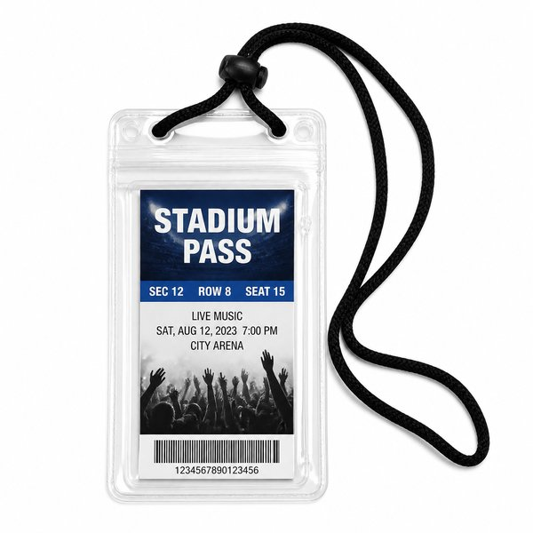

【プロ野球ファン必見】球場観戦＆遠征が10倍快適になる！おすすめ現地観戦・遠征便利グッズ10選
応援している球団の試合を現地で生観戦するのは最高の瞬間ですよね！
しかし、「座席が固くて3時間座るとお尻や腰が痛い」「遠い席から選手の表情やベンチの様子が見えにくい」「荷物が多くて遠征先で疲れてしまう」といった悩みもつきものです。
そこで本記事では、年間何度もドームや球場へ足を運ぶ野球ファンの視点から、現地観戦の満足度を何倍にも引き上げる厳選アイテム10選をご紹介します。
- 一目でわかる！おすすめ10選の比較表
- BEST 1：超軽量 10倍 コンパクト双眼鏡 FMC多層コーティング
- BEST 2：無重力 ゲルクッション 二重ハニカム構造
- BEST 3：Anker 622 Magnetic Battery (MagGo) 5000mAh
- BEST 4：携帯用 折りたたみ ポータブル座布団マット
- BEST 5：保冷缶ホルダー 350ml缶用 JCB-352
- BEST 6：トラベル衣類圧縮バッグ ファスナー式 防水
- BEST 7：クリーニングクロス TV用 超極細繊維 ウォッシャブル
- BEST 8：スマホショルダーストラップ 首掛け 斜めがけ 耐久コード
- BEST 9：チケット＆ICカードホルダー ネックストラップ付き 透明窓
- BEST 10：電熱ヒーターベスト 前後発熱 屋外観戦・寒風対策
- まとめ：生活をラクにする最初の一歩
| 順位 | 商品名 | ブランド | 最大の特徴・おすすめ理由 | 総合評価 |
|---|---|---|---|---|
| 01 | 超軽量 10倍 コンパクト双眼鏡 FMC多層コーティング | SMILE LIGHT | ドームや夜間照明でも視界が明るいFMC多層マルチコーティング | ★★★★★ 4.8 |
| 02 | 無重力 ゲルクッション 二重ハニカム構造 | GelLight | 卵を置いて座っても割れない圧倒的な耐圧分散力 | ★★★★★ 4.8 |
| 03 | Anker 622 Magnetic Battery (MagGo) 5000mAh | Anker（アンカー） | ケーブル不要で片手撮影や応援の邪魔にならない | ★★★★☆ 4.7 |
| 04 | 携帯用 折りたたみ ポータブル座布団マット | キャプテンスタッグ（CAPTAIN STAG） | 超軽量・コンパクトで遠征の荷物を一切増やさない | ★★★★☆ 4.6 |
| 05 | 保冷缶ホルダー 350ml缶用 JCB-352 | THERMOS（サーモス） | ぬるくなりがちな缶ビールを最後の一滴まで冷たいまま美味しく飲める | ★★★★★ 4.9 |
| 06 | トラベル衣類圧縮バッグ ファスナー式 防水 | TABITORA（タビトラ） | ユニフォームや応援パーカーがスッキリ収まり荷造りが劇的時短 | ★★★★★ 4.8 |
| 07 | クリーニングクロス TV用 超極細繊維 ウォッシャブル | エレコム（ELECOM） | 水拭き不要で頑固な皮脂汚れや指紋を一瞬でキャッチ | ★★★★★ 4.9 |
| 08 | スマホショルダーストラップ 首掛け 斜めがけ 耐久コード | Topologie風 | ドリンクや応援グッズで手が塞がっていてもスマホを即座に操作可能 | ★★★★★ 4.8 |
| 09 | チケット＆ICカードホルダー ネックストラップ付き 透明窓 | サンワサプライ | 入場時や再入場時のチェックが首から見せるだけで一瞬で完了 | ★★★★☆ 4.6 |
| 10 | 電熱ヒーターベスト 前後発熱 屋外観戦・寒風対策 | EXCITECH | 冷え切る屋外スタジアムでもボタンひとつで即座にポカポカ | ★★★★☆ 4.7 |

超軽量 10倍 コンパクト双眼鏡 FMC多層コーティング
スタンド上段やパノラマ席からでも、マウンドの投手の握りやベンチ内の選手の笑顔までクリアに捉える10倍双眼鏡。わずか140g前後のポケットサイズで、長時間の試合でも腕が疲れません。
- ドームや夜間照明でも視界が明るいFMC多層マルチコーティング
- 片手で持てる超軽量設計でネックストラップ付属
- 目幅調整＆ピント合わせリングが滑らかで観戦に集中できる
- メガネをかけたままだとアイカップの微調整が必要

無重力 ゲルクッション 二重ハニカム構造
プラスチック製の硬いスタジアムシートに敷くだけで、お尻にかかる体圧を分散する高弾性ゲルクッション。延長戦を含む3時間超の試合でも、お尻や腰の痛みが劇的に軽減されます。
- 卵を置いて座っても割れない圧倒的な耐圧分散力
- 通気性抜群のメッシュカバー付きで夏場の蒸れや冬の底冷えを遮断
- 取っ手付きカバーで観戦バッグに入れて手軽に持ち運べる
- ゲル素材のため重さが約900g〜1kgほどある

Anker 622 Magnetic Battery (MagGo) 5000mAh
iPhoneの背面にマグネットでピタッと吸着するワイヤレスモバイルバッテリー。球場内での電子チケット表示、応援シーンの写真・動画撮影、試合速報チェックで電池切れの心配がゼロになります。
- ケーブル不要で片手撮影や応援の邪魔にならない
- 折りたたみ式スタンド内蔵で新幹線での移動中も動画視聴が快適
- 薄型スリム設計でポケットにスッキリ収まる
- MagSafe対応iPhone専用（非対応機種はケース併用が必要）

携帯用 折りたたみ ポータブル座布団マット
重さわずか40gで手のひらサイズに折りたためる携帯クッション。球場の冷たいベンチや雨上がりの濡れた座席にサッと敷くだけで、断熱・防水シートとして大活躍します。
- 超軽量・コンパクトで遠征の荷物を一切増やさない
- 水や汚れに強い発泡ポリエチレン素材で丸洗い可能
- 屋外球場や春先・秋口のナイトゲームでの冷え防止に必須
- 厚みは約1cmのためゲルクッションほどの極厚クッション性はない

保冷缶ホルダー 350ml缶用 JCB-352
缶ビールや缶チューハイをそのまま差し込むだけで、キンキンに冷えた温度を試合終了までキープする保冷ホルダー。球場のドリンクホルダーにジャストフィットし結露も防ぎます。
- ぬるくなりがちな缶ビールを最後の一滴まで冷たいまま美味しく飲める
- 表面が結露しないため手や応援グッズが濡れない
- タンブラーとしても使える使い勝手の良さ
- 球場によっては缶類の持ち込み制限があるためルール確認が必要

トラベル衣類圧縮バッグ ファスナー式 防水
かさばるユニフォームやタオル、着替えをファスナーを閉めるだけで約50%圧縮できる遠征用パッキングバッグ。掃除機不要で出張や遠征のスーツケース容量を一気に節約できます。
- ユニフォームや応援パーカーがスッキリ収まり荷造りが劇的時短
- 防水ナイロン素材で急な雨や濡れたタオルの仕分けにも便利
- 外側ファスナーを一周閉じるだけの簡単圧縮
- 無理に詰め込みすぎるとファスナー破損の原因になるため適量がベスト

クリーニングクロス TV用 超極細繊維 ウォッシャブル
双眼鏡のレンズやスマホカメラ、メガネの指紋やホコリを一拭きでピカピカにするプロ仕様クロス。試合中に双眼鏡のレンズが曇ったり汚れたりした際、サッと拭くだけでクリアな視界が戻ります。
- 水拭き不要で頑固な皮脂汚れや指紋を一瞬でキャッチ
- 汚れたら水洗いで何度でも繰り返し使える高耐久性
- 大判サイズでカメラ本体やタブレット画面も一気に綺麗に
- 砂粒がついたまま拭くとレンズ傷の原因になるため優しく使用

スマホショルダーストラップ 首掛け 斜めがけ 耐久コード
両手にメガホンやドリンク、食べ物を持って移動する球場内でスマホを首や肩から斜めがけできる必須アイテム。シャッターチャンスにすぐカメラを構えられ、座席下への落下紛失も防ぎます。
- ドリンクや応援グッズで手が塞がっていてもスマホを即座に操作可能
- 座席の隙間への落下や観戦中の紛失を100%防止
- 太めのロープコードで長時間首にかけても痛くなりにくい
- 充電口が極端に狭いスマホケースだとホルダーシートが入らない場合あり

チケット＆ICカードホルダー ネックストラップ付き 透明窓
紙の観戦チケットやQR入場証、交通系ICカードを首から下げて一括管理できるパスケース。再入場ゲートや売店での支払いがスムーズになり、カバンの中でチケットを探すストレスを解消します。
- 入場時や再入場時のチェックが首から見せるだけで一瞬で完了
- ファスナー付きポケット付きで小銭やロッカー鍵も収納可能
- 雨や水滴に強い透明PVCウィンドウ仕様
- 大型の特殊サイズチケットは折り曲げて入れる必要がある

電熱ヒーターベスト 前後発熱 屋外観戦・寒風対策
春先の開幕シリーズや秋のCS・日本シリーズなど、浜風や冷え込みが厳しい屋外球場で真価を発揮する電熱ベスト。ユニフォームの下に着込んでも目立たず、試合終了まで温もりをキープします。
- 冷え切る屋外スタジアムでもボタンひとつで即座にポカポカ
- スリム設計でチームユニフォームの下に違和感なく重ね着可能
- 首元までヒーターがあるため冷たい風の侵入を防ぐ
- 球場持ち込み用にモバイルバッテリーの充電を忘れずに
💡 まとめ：生活をラクにする最初の一歩
万全の装備で臨む現地観戦は、試合の興奮をよりダイレクトに味わえます。次の観戦やビジター遠征に向けて、お気に入りの便利グッズをバッグに忍ばせて出かけてみてください！
楽天市場では「5と0のつく日」や「お買い物マラソン」などのキャンペーンに合わせて購入すると、ポイント還元が最大化してお得に手に入ります。ぜひチェックしてみてくださいね。